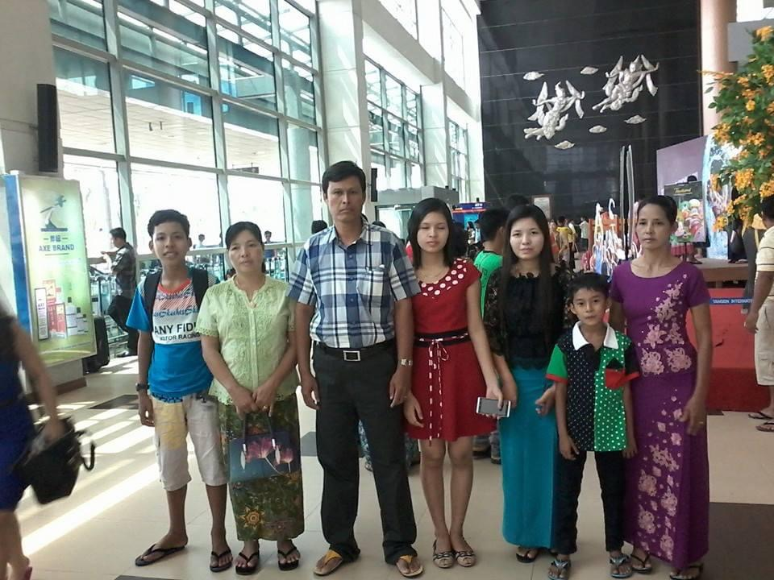

1960s — A Beginning ၁၉၆၀ ခုနှစ်များ — စတင်မှု
Born in 1968.
All we know is she is two years older than my dad, so we assume this year because birth certificates were uncommon in villages back then.
၁၉၆၀ ပြည့်လွန်နှစ်များ — ပုံပြင်တစ်ပုဒ်ရဲ့ အစ
အမေက ၁၉၆၈ ခုနှစ်မှာ မွေးဖွားခဲ့တယ်လို့ ဆိုရမှာပေါ့။
(တကယ်တော့ အဖေ့ထက် ၂ နှစ် ကြီးတယ်ဆိုတာလောက်ပဲ ကျွန်တော်တို့ အသေအချာ သိကြတာလေ။ အဲဒီခေတ်က ရွာတွေမှာ မွေးစာရင်းလုပ်တဲ့ အလေ့အထ သိပ်မရှိကြတော့ ကျွန်တော်တို့လည်း ဒီလိုပဲ မှန်းဆရတာပေါ့။)
ကျွန်တော်တို့ မိသားစုတစ်စုလုံးကို ကျောက်ဆင် ရွာမှာပဲ မွေးဖွားကြီးပြင်းခဲ့ကြတာပါ။ ဒါကြောင့်လည်း ကျွန်တော်တို့က 'ကျောက်ဆင်' သွေးစစ်စစ်တွေ ဖြစ်နေတာဟာ သိပ်ကို ကြည်နူးစရာကောင်းတဲ့ အချက်လေးတစ်ခုပါပဲ ဟားဟား။
အမေက သူ့မောင်နှမတွေနဲ့ အတူဖြတ်သန်းခဲ့ရတဲ့ ကလေးဘဝ အမှတ်တရတွေကို ကျွန်တော်တို့ကို အမြဲ ပြန်ပြောပြတတ်တယ်။
အဲဒီပုံပြင်လေးတွေထဲမှာ အမေ့ရဲ့အဘွား (ကျွန်တော်တို့အတွက်တော့ ဘေးမမကြီးပေါ့၊ အမေကတော့ မိရှင်ကြီး လို့ ခေါ်တယ်) အကြောင်းက အမြဲ ပါလေ့ရှိပြီး တော်တော်လေးကို နာမည်ကြီးတာပေါ့။ ကျွန်တော် ကိုယ်တိုင် မဆုံဖူးလိုက်ရတာတော့ အရမ်းဝမ်းနည်းဖို့ကောင်းပါတယ်။ ဒါပေမဲ့ အမေပြောပြတတ်တဲ့ ပုံပြင်လေးတွေ ကျေးဇူးကြောင့် မိရှင်ကြီးဟာ ကျွန်တော့်အတွက်တော့ အမြဲတမ်း ရင်းနှီးကျွမ်းဝင်နေခဲ့ပါတယ်။
